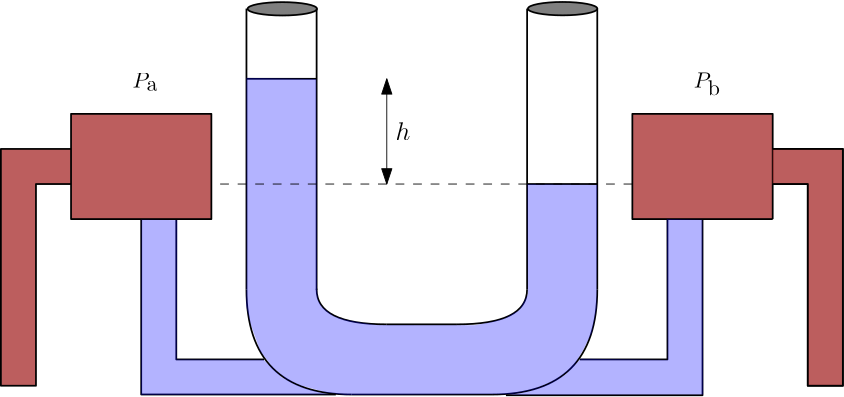
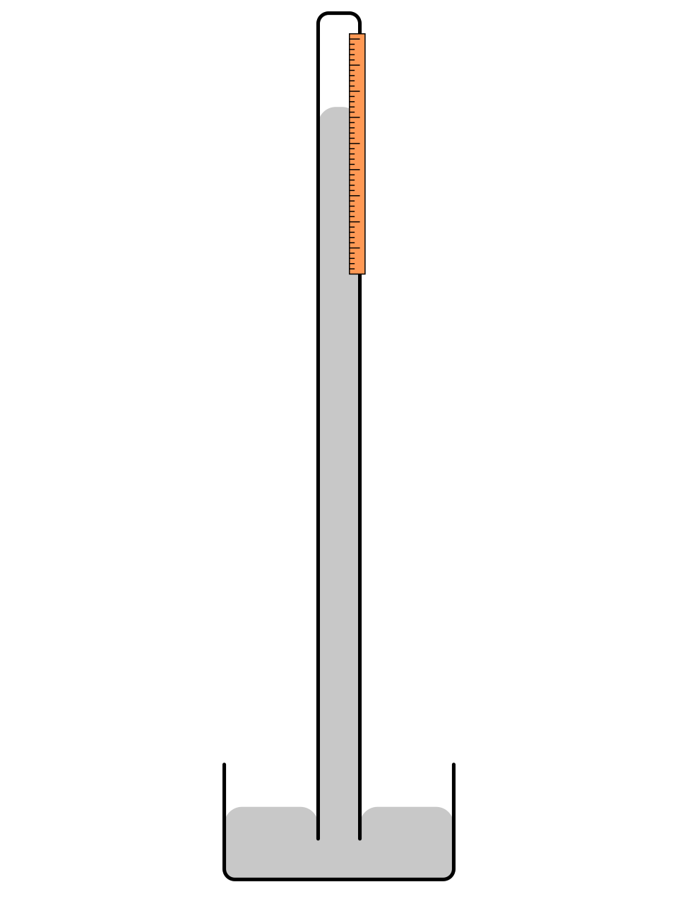
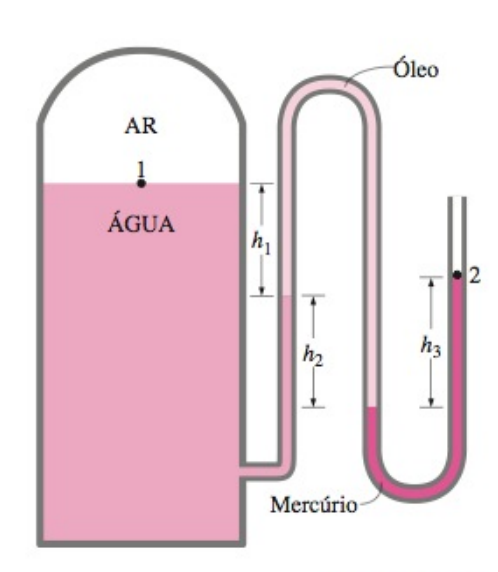
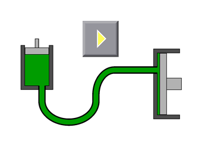
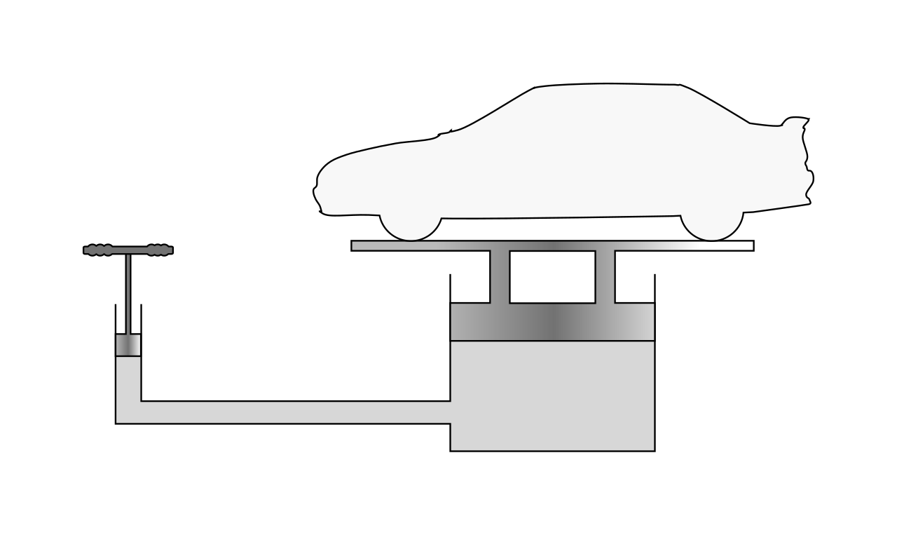

Aula 05 - Manômetros e Princípio de Pascal
Mecânica dos Fluidos
Objetivos
Ao final desta aula, você deverá ser capaz de:
- Diferenciar pressão absoluta, pressão atmosférica, pressão manométrica e pressão de vácuo.
- Compreender o funcionamento dos principais tipos de manômetros.
- Resolver problemas com manômetros utilizando o Método do Fluxo.
- Interpretar medições com manômetros de tubo em U, manômetros diferenciais e manômetros inclinados.
- Explicar por que a pressão atmosférica padrão é equivalente a aproximadamente 760 mmHg.
- Compreender o Princípio de Pascal e suas aplicações em sistemas hidráulicos.
- Resolver exemplos numéricos envolvendo prensas hidráulicas, macacos hidráulicos e transmissão de pressão em fluidos confinados.
Introdução
Imagine que um técnico precisa verificar se a pressão de uma linha de ar comprimido está adequada. Ele conecta um tubo em U contendo mercúrio ao ponto de medição e observa que uma das colunas desce enquanto a outra sobe. Como transformar esse desnível em pressão?
Como a altura de uma coluna líquida pode indicar a pressão de um gás ou de outro líquido?
Agora pense em uma oficina mecânica: uma pessoa aplica uma força relativamente pequena na alavanca de um macaco hidráulico e consegue levantar um automóvel. Esse efeito parece uma multiplicação de força, mas está baseado em uma propriedade simples dos fluidos em repouso.
Como uma pequena força aplicada em uma área reduzida pode produzir uma força muito maior em outra região do sistema?
Essas duas situações são aplicações diretas da hidrostática. Na primeira, usamos os manômetros, que transformam diferenças de pressão em diferenças de altura. Na segunda, usamos o Princípio de Pascal, que descreve como a pressão aplicada a um fluido confinado é transmitida pelo sistema.
Pressão Absoluta, Manométrica e de Vácuo
Antes de estudar os manômetros, é importante organizar as formas de representar pressão.
Pressão absoluta é medida em relação ao vácuo absoluto. É a pressão real do fluido:
\[P_{\text{abs}} \geq 0\]
Pressão atmosférica é a pressão exercida pelo ar atmosférico. Ao nível do mar, adota-se frequentemente:
\[P_{\text{atm}} = 101325\,\text{Pa} = 101{,}325\,\text{kPa} = 1\,\text{atm}\]
Pressão manométrica é medida em relação à pressão atmosférica local:
\[\boxed{P_{\text{man}} = P_{\text{abs}} - P_{\text{atm}}}\]
Essa relação deve ser lida como uma comparação com a atmosfera. A linha da pressão atmosférica funciona como o zero do manômetro, mas não como o zero absoluto da pressão. Assim:
- Se \(P_{\text{abs}} > P_{\text{atm}}\), então \(P_{\text{man}} > 0\). A pressão está acima da atmosférica.
- Se \(P_{\text{abs}} = P_{\text{atm}}\), então \(P_{\text{man}} = 0\). A pressão absoluta é igual à pressão ambiente.
- Se \(P_{\text{abs}} < P_{\text{atm}}\), então \(P_{\text{man}} < 0\). A pressão está abaixo da atmosférica e dizemos que existe vácuo relativo.
Pressão de vácuo pode ser escrita como o quanto a pressão absoluta está abaixo da atmosférica:
\[\boxed{P_{\text{vac}} = P_{\text{atm}} - P_{\text{abs}}}\]
Portanto:
\[P_{\text{vac}} = -P_{\text{man}} \quad \text{quando} \quad P_{\text{man}} < 0\]
É importante notar que pressão de vácuo não é uma pressão absoluta negativa. A pressão absoluta nunca fica abaixo de zero. O sinal negativo aparece apenas na pressão manométrica, porque ela foi definida como diferença em relação à atmosfera:
\[P_{\text{man}} = P_{\text{abs}} - P_{\text{atm}}\]
Se a pressão absoluta do recipiente é menor que a atmosférica, a subtração fica negativa. Por exemplo, se \(P_{\text{abs}}=98\,\text{kPa}\) e \(P_{\text{atm}}=101\,\text{kPa}\), então:
\[P_{\text{man}}=98-101=-3\,\text{kPa}\]
Esse valor significa apenas que a pressão interna está \(3\,\text{kPa}\) abaixo da atmosfera. A pressão de vácuo correspondente é positiva:
\[P_{\text{vac}}=3\,\text{kPa}\]
Uma forma simples de interpretar é:
- A pressão absoluta mede a pressão a partir do vácuo absoluto.
- A pressão atmosférica é a pressão do ar ambiente.
- A pressão manométrica positiva indica quanto a pressão está acima da atmosfera.
- A pressão de vácuo indica quanto a pressão está abaixo da atmosfera.
Por exemplo, se um recipiente está com pressão absoluta menor que a atmosférica, ele ainda possui pressão. Porém, comparado com o ambiente externo, sua pressão é menor. Por isso dizemos que há vácuo relativo.

Na figura, o vácuo absoluto é o nível em que \(P_{\text{abs}}=0\). A pressão absoluta sempre é medida a partir desse nível. A pressão atmosférica aparece como uma linha de referência intermediária. Quando o estado do sistema fica acima dessa linha, a diferença até a atmosfera é uma pressão manométrica positiva. Quando o estado fica abaixo dessa linha, a diferença até a atmosfera é chamada de pressão de vácuo, e a pressão manométrica é negativa.
Manômetros
Manômetros são instrumentos utilizados para medir pressão ou diferença de pressão. Em hidrostática, os manômetros de coluna líquida são especialmente importantes porque sua análise vem diretamente do Teorema de Stevin:
\[\Delta P = \rho g \Delta h\]
Nos manômetros de coluna, a diferença de pressão é equilibrada pelo peso de uma coluna de fluido manométrico. Quanto maior a diferença de pressão, maior o desnível entre as colunas.
O fluido manométrico deve ser escolhido de acordo com a faixa de pressão a medir. Para pressões pequenas, usam-se fluidos menos densos, como água ou óleo. Para pressões maiores, usa-se frequentemente mercúrio, pois sua densidade é elevada.
Método do Fluxo Aplicado a Manômetros
Na aula anterior, utilizamos o Método do Fluxo para vasos comunicantes. O mesmo procedimento é aplicado aos manômetros.
Ao percorrer um caminho contínuo de um ponto \(A\) até um ponto \(B\):
\[\boxed{P_A + \sum(\pm \rho g \Delta h) - P_B = 0}\]
Regras práticas:
- Ao descer em um fluido, a pressão aumenta: \(+\rho g \Delta h\).
- Ao subir em um fluido, a pressão diminui: \(-\rho g \Delta h\).
- Ao se mover horizontalmente dentro do mesmo fluido, a pressão permanece constante.
- Ao passar de um fluido para outro, usa-se a densidade do fluido presente no trecho percorrido.
- Se uma extremidade está aberta para a atmosfera, a pressão naquele ponto é \(P_{\text{atm}}\).
Esse método evita memorizar muitas fórmulas diferentes. O mais importante é escolher um caminho claro e manter os sinais consistentes.
Tipos de Manômetros
Manômetro Aberto
O manômetro aberto possui uma extremidade conectada ao ponto onde se deseja medir a pressão e a outra aberta para a atmosfera. Ele mede a pressão manométrica do ponto conectado.
Se a densidade do gás conectado for desprezível e o desnível do fluido manométrico for \(h\), a pressão manométrica é:
\[\boxed{P_{\text{man}} = \rho_{\text{m}} g h}\]
em que \(\rho_{\text{m}}\) é a densidade do fluido manométrico.
Se a pressão do ponto conectado for menor que a atmosférica, o sinal se inverte:
\[P_{\text{man}} = -\rho_{\text{m}} g h\]
Manômetro Diferencial
O manômetro diferencial possui as duas extremidades conectadas a dois pontos de um sistema. Ele mede a diferença de pressão entre esses pontos.

Quando os dois pontos estão em uma mesma cota, preenchidos pelo mesmo fluido da tubulação, e o fluido manométrico é mais denso, uma forma comum do resultado é:
\[\boxed{P_1 - P_2 = (\rho_{\text{m}} - \rho_{\text{f}})g\Delta h}\]
em que:
- \(\rho_{\text{m}}\) é a densidade do fluido manométrico.
- \(\rho_{\text{f}}\) é a densidade do fluido da tubulação.
- \(\Delta h\) é o desnível entre as interfaces do fluido manométrico.
Essa expressão não deve ser decorada sem cuidado: se os pontos estiverem em cotas diferentes ou se houver fluidos diferentes nas conexões, é mais seguro usar o Método do Fluxo.
Manômetro Inclinado
O manômetro inclinado é usado para medir pequenas diferenças de pressão com maior sensibilidade. Em vez de observar diretamente uma pequena altura vertical \(h\), mede-se um deslocamento maior \(L\) ao longo do tubo inclinado.

A altura vertical correspondente é:
\[\boxed{h = L\sin\theta}\]
Portanto:
\[\boxed{P_{\text{man}} = \rho_{\text{m}}gL\sin\theta}\]
Quanto menor o ângulo \(\theta\), maior será o deslocamento \(L\) para a mesma pressão, facilitando a leitura.
Manômetro Fechado ou Barômetro
No manômetro fechado, uma das extremidades pode estar evacuada ou fechada com uma pressão conhecida. Quando a extremidade superior está praticamente em vácuo, o instrumento se aproxima do funcionamento de um barômetro de mercúrio.
O barômetro mede a pressão atmosférica pela altura da coluna de mercúrio sustentada pela atmosfera:
\[P_{\text{atm}} = \rho_{\text{Hg}}gh_{\text{Hg}}\]
Essa ideia é a base da unidade prática milímetro de mercúrio (\(\text{mmHg}\)).

O Manômetro de Mercúrio e a Relação \(1\,\text{atm} = 760\,\text{mmHg}\)
O mercúrio foi historicamente muito utilizado em barômetros e manômetros porque possui densidade muito elevada. Isso permite medir pressões grandes com colunas relativamente pequenas.
Considere um barômetro de mercúrio em equilíbrio. Na superfície livre inferior atua a pressão atmosférica. No topo da coluna, dentro do tubo fechado, há aproximadamente vácuo. Aplicando o Teorema de Stevin:
\[P_{\text{atm}} = P_{\text{vácuo}} + \rho_{\text{Hg}}gh\]
Como \(P_{\text{vácuo}} \approx 0\):
\[P_{\text{atm}} = \rho_{\text{Hg}}gh\]
Isolando \(h\):
\[h = \frac{P_{\text{atm}}}{\rho_{\text{Hg}}g}\]
Usando:
- \(P_{\text{atm}} = 101325\,\text{Pa}\).
- \(\rho_{\text{Hg}} = 13600\,\text{kg}/\text{m}^3\).
- \(g = 9{,}807\,\text{m}/\text{s}^2\).
Temos:
\[h = \frac{101325}{13600\cdot 9{,}807}\]
\[h = 0{,}7597\,\text{m}\]
Convertendo para milímetros:
\[h = 759{,}7\,\text{mm} \approx 760\,\text{mm}\]
Portanto:
\[\boxed{1\,\text{atm} \approx 760\,\text{mmHg}}\]
Interpretação: dizer que uma pressão vale \(760\,\text{mmHg}\) significa dizer que ela é capaz de equilibrar uma coluna de mercúrio de aproximadamente \(760\,\text{mm}\) de altura.
Como \(760\,\text{mmHg} = 101325\,\text{Pa}\):
\[\boxed{1\,\text{mmHg} \approx 133{,}3\,\text{Pa}}\]
Exemplos Resolvidos
Nos exemplos a seguir, a resolução segue a organização usada em Çengel: identificação do problema, hipóteses, propriedades, análise e discussão. O objetivo é resolver com poucas fórmulas memorizadas e com atenção ao sentido físico da pressão.
Valores constantes adotados:
- \(g = 9{,}807\,\text{m}/\text{s}^2\).
- \(P_{\text{atm}} = 101{,}325\,\text{kPa}\) (nível do mar).
- \(\rho_{\text{água}} \approx 1000\,\text{kg}/\text{m}^3\), salvo quando indicado outro valor.
- \(\rho_{\text{Hg}} = 13600\,\text{kg}/\text{m}^3\).
Exemplo 5.1: Pressão absoluta medida por manômetro aberto
Um manômetro aberto é usado para medir a pressão em um tanque de gás. O fluido manométrico possui densidade \(\rho=850\,\text{kg}/\text{m}^3\) e a diferença de altura entre as colunas é \(h=0{,}550\,\text{m}\). A pressão atmosférica local é \(96{,}0\,\text{kPa}\). Determine a pressão absoluta no tanque.
Solução
Hipóteses: o fluido do tanque é um gás e sua variação de pressão com a altura é desprezível. O fluido manométrico está em repouso.
Dados e propriedades: \(\rho=850\,\text{kg}/\text{m}^3\), \(h=0{,}550\,\text{m}\), \(P_{\text{atm}}=96{,}0\,\text{kPa}\) e \(g=9{,}807\,\text{m}/\text{s}^2\).
Análise: a pressão no tanque está acima da atmosférica, logo:
\[P_{\text{abs}}=P_{\text{atm}}+\rho gh\]
Carregando as unidades e convertendo a parcela hidrostática para \(\text{kPa}\):
\[ \begin{aligned} P_{\text{abs}}= &96{,}0\,\text{kPa}\\ &+\left(850\,\frac{\text{kg}}{\text{m}^3}\right) \left(9{,}807\,\frac{\text{m}}{\text{s}^2}\right) \left(0{,}550\,\text{m}\right)\\ &\times\left(\frac{1\,\text{kPa}}{1000\,\text{kg}/(\text{m}\,\text{s}^2)}\right) \end{aligned} \]
\[P_{\text{abs}}=100{,}6\,\text{kPa}\]
\[\boxed{P_{\text{abs}}=101\,\text{kPa}}\]
Discussão: a pressão manométrica é apenas a parcela acima da atmosfera. O menor número de algarismos significativos nos dados principais está em \(h=0{,}550\,\text{m}\) e \(P_{\text{atm}}=96{,}0\,\text{kPa}\), ambos com três algarismos significativos. Por isso, a resposta final foi arredondada para três algarismos significativos:
\[P_{\text{man}}=100{,}6\,\text{kPa}-96\,\text{kPa}=4{,}6\,\text{kPa}\]
Exemplo 5.2: Manômetro aberto indicando vácuo
Um manômetro aberto contém água como fluido manométrico. Ele é conectado a um recipiente em que a pressão é menor que a atmosférica. Observa-se um desnível de \(0{,}350\,\text{m}\), com a coluna mais alta no lado conectado ao recipiente. Determine a pressão manométrica no recipiente.
Solução
Hipóteses: a água está em repouso e a extremidade aberta está à pressão atmosférica.
Dados e propriedades: \(\rho_{\text{água}}=997\,\text{kg}/\text{m}^3\), \(h=0{,}350\,\text{m}\) e \(g=9{,}807\,\text{m}/\text{s}^2\).
Análise: como a coluna está mais alta no lado do recipiente, a pressão interna é menor que a atmosférica. Assim:
\[P_{\text{man}}=P_{\text{rec}}-P_{\text{atm}}=-\rho gh\]
Carregando as unidades e convertendo para \(\text{kPa}\):
\[ \begin{aligned} P_{\text{man}}= &-\left(997\,\frac{\text{kg}}{\text{m}^3}\right) \left(9{,}807\,\frac{\text{m}}{\text{s}^2}\right) \left(0{,}350\,\text{m}\right)\\ &\times\left(\frac{1\,\text{kPa}}{1000\,\text{kg}/(\text{m}\,\text{s}^2)}\right) \end{aligned} \]
\[P_{\text{man}}=-3{,}42\,\text{kPa}\]
\[\boxed{P_{\text{man}}=-3{,}42\,\text{kPa}}\]
Discussão: o sinal negativo não significa pressão absoluta negativa. Ele indica que a pressão do recipiente está \(3{,}42\,\text{kPa}\) abaixo da atmosfera. Como \(\rho_{\text{água}}\), \(g\) e \(h\) foram dados com três ou quatro algarismos significativos, o resultado final fica com três algarismos significativos. A pressão de vácuo correspondente é:
\[\boxed{P_{\text{vac}}=3{,}42\,\text{kPa}}\]
Exemplo 5.3: Manômetro de vários fluidos
A água de um tanque é pressurizada por ar. A pressão é medida por um manômetro de vários fluidos aberto para a atmosfera. Ao percorrer o manômetro da interface ar-água até a extremidade aberta, atravessam-se uma coluna de água de \(h_1=0{,}10\,\text{m}\), uma coluna de óleo de \(h_2=0{,}20\,\text{m}\) e uma coluna de mercúrio de \(h_3=0{,}35\,\text{m}\). A pressão atmosférica local é \(85{,}6\,\text{kPa}\). Determine a pressão absoluta do ar no tanque.

Solução
Hipóteses: a pressão do ar no tanque é uniforme; os fluidos são imiscíveis e estão em repouso.
Dados e propriedades: \(\rho_{\text{água}}=1000\,\text{kg}/\text{m}^3\), \(\rho_{\text{óleo}}=850\,\text{kg}/\text{m}^3\), \(\rho_{\text{Hg}}=13600\,\text{kg}/\text{m}^3\), \(h_1=0{,}10\,\text{m}\), \(h_2=0{,}20\,\text{m}\), \(h_3=0{,}35\,\text{m}\), \(P_{\text{atm}}=85{,}6\,\text{kPa}\) e \(g=9{,}807\,\text{m}/\text{s}^2\).
Análise: partindo da pressão do ar no tanque e caminhando até a atmosfera:
\[ P_{\text{ar}}+\rho_{\text{água}}gh_1+\rho_{\text{óleo}}gh_2-\rho_{\text{Hg}}gh_3-P_{\text{atm}}=0 \]
Logo:
\[ P_{\text{ar}}=P_{\text{atm}}-\rho_{\text{água}}gh_1-\rho_{\text{óleo}}gh_2+\rho_{\text{Hg}}gh_3 \]
\[ \begin{aligned} P_{\text{ar}}&= 85{,}6\,\text{kPa} +\left(9{,}807\,\frac{\text{m}}{\text{s}^2}\right) \left[ \left(13600\,\frac{\text{kg}}{\text{m}^3}\right)\left(0{,}35\,\text{m}\right)\right.\\ &\qquad \left.-\left(1000\,\frac{\text{kg}}{\text{m}^3}\right)\left(0{,}10\,\text{m}\right) -\left(850\,\frac{\text{kg}}{\text{m}^3}\right)\left(0{,}20\,\text{m}\right) \right]\\ &\qquad \left(\frac{1\,\text{kPa}}{1000\,\text{kg}/(\text{m}\,\text{s}^2)}\right) \end{aligned} \]
\[P_{\text{ar}}=129{,}6\,\text{kPa}\]
\[\boxed{P_{\text{ar}}\approx 1{,}3\times 10^2\,\text{kPa}}\]
Discussão: esse exemplo mostra a vantagem do método do fluxo. Em cada trecho, usa-se a densidade do fluido atravessado; ao se mover horizontalmente no mesmo fluido em repouso, a pressão não muda. As alturas foram dadas com dois algarismos significativos, por isso a resposta final foi arredondada para dois algarismos significativos.
Exemplo 5.4: Manômetro diferencial com água e mercúrio
O próprio tubo em U pode ser usado como um manômetro diferencial. Ele recebe esse nome porque não mede uma pressão isolada: ele compara as pressões em dois pontos, \(1\) (lado esquerdo) e \(2\) (lado direito), por meio do desnível entre as interfaces do fluido manométrico. Nos dois ramos, há água acima do mercúrio. O mercúrio é o fluido manométrico e é mais denso que a água.
Após o sistema atingir equilíbrio, observa-se que a interface água-mercúrio no ramo ligado ao ponto \(1\) está \(0{,}250\,\text{m}\) mais baixa que a interface água-mercúrio no ramo ligado ao ponto \(2\). Em outras palavras, a pressão no ponto \(1\) empurra o mercúrio para baixo no seu ramo e ele sobe no ramo ligado ao ponto \(2\). Determine a diferença de pressão \(P_1-P_2\).
Solução
Hipóteses: os pontos \(1\) e \(2\) estão na mesma cota; a água e o mercúrio estão em equilíbrio estático no manômetro.
Dados e propriedades: \(\rho_{\text{água}}=997\,\text{kg}/\text{m}^3\), \(\rho_{\text{Hg}}=13600\,\text{kg}/\text{m}^3\), \(\Delta h=0{,}250\,\text{m}\) e \(g=9{,}807\,\text{m}/\text{s}^2\).
Análise: para pontos na mesma cota, com água nos dois ramos e fluido manométrico mais denso:
\[P_1-P_2=(\rho_{\text{Hg}}-\rho_{\text{água}})g\Delta h\]
Carregando as unidades e convertendo para \(\text{kPa}\):
\[ \begin{aligned} P_1-P_2= &\left(13600-997\right)\frac{\text{kg}}{\text{m}^3} \left(9{,}807\,\frac{\text{m}}{\text{s}^2}\right) \left(0{,}250\,\text{m}\right)\\ &\times\left(\frac{1\,\text{kPa}}{1000\,\text{kg}/(\text{m}\,\text{s}^2)}\right) \end{aligned} \]
\[P_1-P_2=30{,}9\,\text{kPa}\]
\[\boxed{P_1-P_2=30{,}9\,\text{kPa}}\]
Discussão: o ponto \(1\) tem maior pressão, pois empurra o mercúrio para baixo no seu lado do manômetro. A diferença de alturas foi dada com três algarismos significativos, então a resposta final deve manter três algarismos significativos. Se os pontos não estivessem na mesma cota, a expressão simplificada não deveria ser usada diretamente.
Princípio de Pascal
O Princípio de Pascal estabelece que:
Uma variação de pressão aplicada a um fluido incompressível em repouso e confinado é transmitida integralmente a todos os pontos do fluido e às paredes do recipiente.

Em termos matemáticos, se uma pressão adicional \(\Delta P\) é aplicada a um ponto do fluido, essa mesma variação aparece em todos os pontos do sistema:
\[\boxed{\Delta P_1 = \Delta P_2}\]
Como pressão é força dividida por área:
\[P = \frac{F}{A}\]
em um sistema hidráulico ideal com dois êmbolos:
\[\frac{F_1}{A_1} = \frac{F_2}{A_2}\]
Logo:
\[\boxed{F_2 = F_1\frac{A_2}{A_1}}\]
Essa relação mostra que a força pode ser amplificada quando a área de saída é maior que a área de entrada.
Importante: o Princípio de Pascal não cria energia. Se a força aumenta, o deslocamento diminui. Em um sistema ideal:
\[F_1d_1 = F_2d_2\]
Assim, o trabalho de entrada é igual ao trabalho de saída, desprezando perdas por atrito, vazamentos e deformações.
Aplicações do Princípio de Pascal
- Prensa hidráulica
Uma pequena força aplicada em um êmbolo de área menor gera uma força maior em um êmbolo de área maior. É usada em processos de conformação, compactação e elevação de cargas.
- Macaco hidráulico
Muito usado em oficinas e veículos. A força aplicada manualmente aumenta a pressão do fluido, que atua sobre um pistão de maior área e levanta a carga.

- Freios hidráulicos
Ao pressionar o pedal, uma pressão é transmitida pelo fluido de freio até os pistões próximos às rodas. Essa pressão gera forças de frenagem.
- Elevadores hidráulicos
Utilizam fluido pressurizado para movimentar plataformas, cadeiras, mesas elevatórias e equipamentos industriais.
- Sistemas de direção e acionamento hidráulico
Máquinas agrícolas, escavadeiras, empilhadeiras e prensas industriais usam transmissão hidráulica de pressão para produzir forças elevadas com controle preciso.
Exemplos com o Princípio de Pascal
Exemplo 5.5: Prensa hidráulica
Uma prensa hidráulica possui um êmbolo menor com área \(A_1 = 5{,}0\,\text{cm}^2\) e um êmbolo maior com área \(A_2 = 250\,\text{cm}^2\). Uma força \(F_1 = 120\,\text{N}\) é aplicada no êmbolo menor. Determine a força exercida pelo êmbolo maior.
Solução
Hipóteses: o fluido é incompressível, está confinado e as perdas por atrito são desprezíveis.
Dados: \(A_1 = 5{,}0\,\text{cm}^2\), \(A_2 = 250\,\text{cm}^2\) e \(F_1 = 120\,\text{N}\).
Análise: pelo Princípio de Pascal, a pressão transmitida aos dois êmbolos é a mesma:
\[\frac{F_1}{A_1}=\frac{F_2}{A_2}\]
\[F_2 = F_1\frac{A_2}{A_1}\]
Como as duas áreas estão em \(\text{cm}^2\), as unidades se cancelam diretamente no fator de razão:
\[ F_2= \left(120\,\text{N}\right) \left(\frac{250\,\text{cm}^2}{5{,}0\,\text{cm}^2}\right) \]
\[F_2=6000\,\text{N}\]
\[\boxed{F_2=6{,}0\,\text{kN}}\]
Discussão: a força foi multiplicada por \(50\), que é a razão entre as áreas. O dado limitante é \(A_1=5{,}0\,\text{cm}^2\), com dois algarismos significativos; por isso, a resposta final foi escrita como \(6{,}0\,\text{kN}\). Esse é o ganho mecânico ideal da prensa.
Exemplo 5.6: Pressão necessária em um macaco hidráulico
O pistão de saída de um macaco hidráulico possui diâmetro \(d=30\,\text{cm}\) e deve elevar um automóvel de massa \(m=2000\,\text{kg}\). Determine a pressão manométrica mínima que deve ser mantida no fluido.
Solução
Hipóteses: o automóvel começa a subir quando a força hidráulica iguala o peso; perdas e atrito são desprezíveis.
Dados: \(d=30\,\text{cm}\), \(m=2000\,\text{kg}\) e \(g=9{,}807\,\text{m}/\text{s}^2\).
Análise: a força necessária é o peso e a área do pistão é \(A=\pi d^2/4\). Primeiro, convertemos o diâmetro:
\[ d= \left(30\,\text{cm}\right) \left(\frac{1\,\text{m}}{100\,\text{cm}}\right) =0{,}30\,\text{m} \]
Como \(P=F/A=mg/(\pi d^2/4)\), fazendo a substituição numérica em uma única etapa:
\[ \begin{aligned} P_{\text{man}} &= \frac{ \left(2000\,\text{kg}\right) \left(9{,}807\,\frac{\text{m}}{\text{s}^2}\right) }{ \frac{\pi}{4}\left(0{,}30\,\text{m}\right)^2 } \left(\frac{1\,\text{kPa}}{1000\,\text{kg}/(\text{m}\,\text{s}^2)}\right) \end{aligned} \]
\[P_{\text{man}}=277{,}5\,\text{kPa}\]
\[\boxed{P_{\text{man}}=2{,}8\times 10^2\,\text{kPa}}\]
Discussão: esse valor é pressão manométrica, pois representa a pressão acima da atmosférica necessária para sustentar a carga no pistão. O diâmetro \(d=30\,\text{cm}\) foi informado com dois algarismos significativos; portanto, a resposta final deve ser arredondada para dois algarismos significativos.
Exemplo 5.7: Deslocamento em uma prensa hidráulica
Em uma prensa hidráulica ideal, o êmbolo menor possui área \(A_1 = 8{,}0\,\text{cm}^2\) e o êmbolo maior possui área \(A_2 = 200\,\text{cm}^2\). Se o êmbolo menor desce \(d_1 = 15\,\text{cm}\), determine quanto o êmbolo maior sobe.
Solução
Hipóteses: o fluido é incompressível e não há vazamentos.
Dados: \(A_1 = 8{,}0\,\text{cm}^2\), \(A_2 = 200\,\text{cm}^2\) e \(d_1 = 15\,\text{cm}\).
Análise: o volume deslocado pelo êmbolo menor é igual ao volume recebido pelo êmbolo maior:
\[A_1d_1=A_2d_2\]
\[d_2=\frac{A_1}{A_2}d_1\]
Como as áreas estão na mesma unidade, o fator \(A_1/A_2\) é adimensional:
\[ d_2= \left(\frac{8{,}0\,\text{cm}^2}{200\,\text{cm}^2}\right) \left(15\,\text{cm}\right) \]
\[\boxed{d_2=0{,}60\,\text{cm}}\]
Discussão: a prensa aumenta a força, mas reduz o deslocamento. O dado \(A_1=8{,}0\,\text{cm}^2\) tem dois algarismos significativos, então \(d_2\) deve ser apresentado com dois algarismos significativos. Isso está de acordo com a conservação do volume deslocado e, no caso ideal, com a conservação do trabalho.
Conclusão
Nesta aula, estudamos os manômetros e o Princípio de Pascal, dois temas centrais da hidrostática aplicada.
Os principais aprendizados foram:
Manômetros de coluna líquida medem pressão a partir do equilíbrio hidrostático entre colunas de fluidos.
O Método do Fluxo permite resolver problemas de manômetros de modo sistemático, somando aumentos e reduções de pressão ao longo de um caminho.
O mercúrio foi historicamente utilizado em barômetros e manômetros por sua alta densidade, o que explica a equivalência \(1\,\text{atm} \approx 760\,\text{mmHg}\).
O Princípio de Pascal explica a transmissão integral de pressão em fluidos confinados e fundamenta prensas, macacos, freios e elevadores hidráulicos.
Sistemas hidráulicos amplificam força, mas não criam energia: o ganho de força vem acompanhado de menor deslocamento.
Na próxima aula, esses conceitos serão conectados a novas aplicações envolvendo forças hidrostáticas e dispositivos hidráulicos.
Exercícios de Fixação
Nas questões a seguir, utilize:
- \(g = 9{,}807\,\text{m}/\text{s}^2\).
- \(\rho_{\text{água}} = 997\,\text{kg}/\text{m}^3\).
- \(\rho_{\text{óleo}} = 850\,\text{kg}/\text{m}^3\), quando não for informado outro valor.
- \(\rho_{\text{Hg}} = 13600\,\text{kg}/\text{m}^3\).
- \(P_{\text{atm}} = 101325\,\text{Pa}\).
- 5.1)
- Qual é a diferença entre pressão absoluta e pressão manométrica?
- A pressão absoluta é medida em relação ao vácuo; a manométrica, em relação à atmosfera.
- A pressão absoluta é medida em relação à atmosfera; a manométrica, em relação ao vácuo.
- As duas são sempre iguais.
- A pressão manométrica nunca pode ser negativa.
- A pressão absoluta pode ser negativa em sistemas de vácuo.
- 5.2)
- Um manômetro aberto com mercúrio apresenta desnível de \(0{,}180\,\text{m}\). A pressão manométrica correspondente é aproximadamente:
- \(12{,}0\,\text{kPa}\).
- \(18{,}6\,\text{kPa}\).
- \(36{,}0\,\text{kPa}\).
- \(24{,}0\,\text{kPa}\).
- \(52{,}5\,\text{kPa}\).
- 5.3)
- Um manômetro aberto com água indica vácuo com desnível de \(0{,}500\,\text{m}\). A pressão manométrica é aproximadamente:
- \(+4{,}89\,\text{kPa}\).
- \(-4{,}89\,\text{kPa}\).
- \(+9{,}81\,\text{kPa}\).
- \(-13{,}6\,\text{kPa}\).
- \(+101{,}3\,\text{kPa}\).
- 5.4)
- Em um manômetro diferencial ligado a uma tubulação de água, usa-se mercúrio como fluido manométrico. Os pontos estão na mesma cota e o desnível do mercúrio é \(0{,}120\,\text{m}\). A diferença de pressão é aproximadamente:
- \(12{,}4\,\text{kPa}\).
- \(30{,}9\,\text{kPa}\).
- \(24{,}0\,\text{kPa}\).
- \(16{,}0\,\text{kPa}\).
- \(14{,}8\,\text{kPa}\).
- 5.5)
- Um manômetro inclinado com óleo possui \(L = 0{,}250\,\text{m}\) e \(\theta = 30^\circ\). A pressão manométrica medida é aproximadamente:
- \(0{,}52\,\text{kPa}\).
- \(2{,}08\,\text{kPa}\).
- \(1{,}04\,\text{kPa}\).
- \(4{,}16\,\text{kPa}\).
- \(8{,}33\,\text{kPa}\).
- 5.6)
- Por que o mercúrio permite medir a pressão atmosférica com uma coluna de apenas cerca de \(760\,\text{mm}\)?
- Porque sua viscosidade é muito baixa.
- Porque sua densidade é muito alta.
- Porque sua temperatura de ebulição é baixa.
- Porque ele se mistura facilmente com a água.
- Porque sua pressão absoluta é nula.
- 5.7)
- Uma prensa hidráulica possui \(A_1 = 4{,}0\,\text{cm}^2\) e \(A_2 = 160\,\text{cm}^2\). Se \(F_1 = 75\,\text{N}\), a força no êmbolo maior é:
- \(1200\,\text{N}\).
- \(2400\,\text{N}\).
- \(6000\,\text{N}\).
- \(4500\,\text{N}\).
- \(3000\,\text{N}\).
- 5.8)
- Um macaco hidráulico possui pistão pequeno de diâmetro \(3{,}0\,\text{cm}\) e pistão grande de diâmetro \(18{,}0\,\text{cm}\). Se a força aplicada no pistão menor é \(100\,\text{N}\), a força no pistão maior é:
- \(3600\,\text{N}\).
- \(1800\,\text{N}\).
- \(600\,\text{N}\).
- \(2400\,\text{N}\).
- \(6000\,\text{N}\).
- 5.9)
- Em uma prensa hidráulica ideal, \(A_1 = 10\,\text{cm}^2\) e \(A_2 = 250\,\text{cm}^2\). Se o êmbolo menor desce \(20\,\text{cm}\), o êmbolo maior sobe:
- \(0{,}40\,\text{cm}\).
- \(2{,}00\,\text{cm}\).
- \(1{,}25\,\text{cm}\).
- \(0{,}80\,\text{cm}\).
- \(5{,}00\,\text{cm}\).
- 5.10)
- Uma pressão de \(350\,\text{kPa}\) atua sobre um pistão de área \(0{,}020\,\text{m}^2\). A força exercida pelo fluido sobre o pistão é:
- \(1750\,\text{N}\).
- \(3500\,\text{N}\).
- \(7000\,\text{N}\).
- \(14000\,\text{N}\).
- \(17500\,\text{N}\).
Recomendações

Referências
- BRUNETTI, Franco. Mecânica dos fluidos. 2. ed. São Paulo: Pearson Prentice Hall, 2008.
- ÇENGEL, Yunus A.; CIMBALA, John M. Mecânica dos fluidos: fundamentos e aplicações. 3. ed. Porto Alegre: AMGH, 2015.
- FOX, Robert W.; MCDONALD, Alan T.; PRITCHARD, Philip J. Introdução à mecânica dos fluidos. 8. ed. Rio de Janeiro: LTC, 2014.
- HALLIDAY, David; RESNICK, Robert; WALKER, Jearl. Fundamentos de física: gravitação, ondas e termodinâmica. 10. ed. Rio de Janeiro: LTC, 2016. (Capítulo 14: Fluidos).
- MUNSON, Bruce R.; YOUNG, Donald F.; OKIISHI, Theodore H. Fundamentos da mecânica dos fluidos. 4. ed. São Paulo: Edgard Blücher, 2004.
- WHITE, Frank M. Mecânica dos fluidos. 8. ed. Porto Alegre: AMGH, 2018.